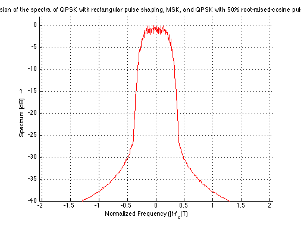
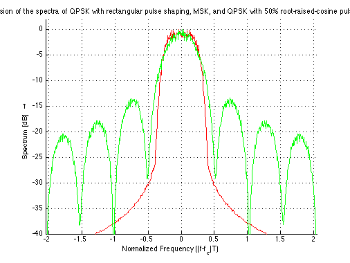
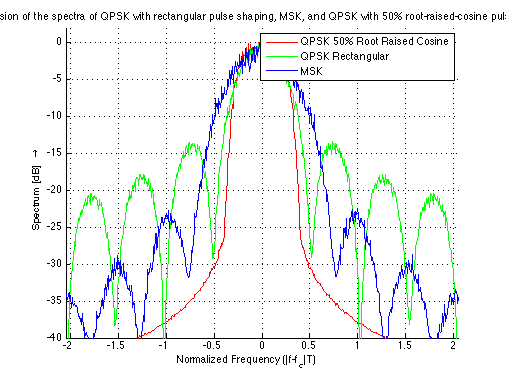

Comparision of the spectra of OQPSK
Copyright 2007 Telecommunications Lab
This demo compares pdf's of
N=16; Fd =4; Fs = N * Fd; Delay = 0; Symb =5000; M = 4; msg_orig = randsrc(Symb,1,[0:M-1],5555); % Symbols Generation msg_tx = pskmod(msg_orig,M); % Modulate Data [y1, t] = rcosflt(msg_tx, Fd, Fs,'fir/sqrt',.5); % 50% root-raised-cosine shaping y2 = rectpulse(msg_tx,N); % rectangular pulse shaping shaping msg_orig = randsrc(Symb,1,[0:1],5555); % Symbols Generation for MSK y_msk = mskmod(msg_orig,N/2); % MSK-Modulation psd_fft = 1048; % PSD-FFT-Length psd_window = kaiser(psd_fft); % PSD Window Function f_A = 1048e5; % Sampling Frequency [LDS1,f_vec] = psd(y1,psd_fft,f_A,psd_window); % Spectral Estimation LDS1 = [LDS1((psd_fft / 2 + 1):psd_fft);LDS1(1:(psd_fft / 2))]; LDS1_dB = 10 * log10(LDS1*(1/psd_fft)); % LDS in dB [LDS2,f_vec] = psd(y2,psd_fft,f_A,psd_window); % Spectral Estimation LDS2 = [LDS2((psd_fft / 2 + 1):psd_fft);LDS2(1:(psd_fft / 2))]; LDS2_dB = 10 * log10((LDS2*(1/psd_fft))); % LDS in dB [LDS3,f_vec] = psd(y_msk,psd_fft,f_A,psd_window); % Spectral Estimation LDS3 = [LDS3((psd_fft / 2 + 1):psd_fft);LDS3(1:(psd_fft / 2))]; LDS3_dB = 10 * log10((LDS3*(1/psd_fft))); % LDS in dB f_vec = (f_vec - round(max(f_vec)/2))/(Fs*2*(f_A/(psd_fft)));% Shifting the Frequency Vector
%QPSK 50% Root Raised Cosine hold on; plot(f_vec,LDS1_dB-max(LDS1_dB),'r','LineWidth',1.5);ylabel('Spectrum [dB] \rightarrow');xlabel('Normalized Frequency (|f-f_c|T)'); grid; axis([-max(f_vec)/2 max(f_vec)/2 -40 2]); title('Comparision of the spectra of QPSK with rectangular pulse shaping, MSK, and QPSK with 50% root-raised-cosine pulse shaping.');
%QPSK Rectangular plot(f_vec,LDS2_dB-max(LDS2_dB),'g','LineWidth',1.5);
%MSK plot(f_vec,LDS3_dB-max(LDS3_dB),'b','LineWidth',1.5);legend('QPSK 50% Root Raised Cosine','QPSK Rectangular','MSK')